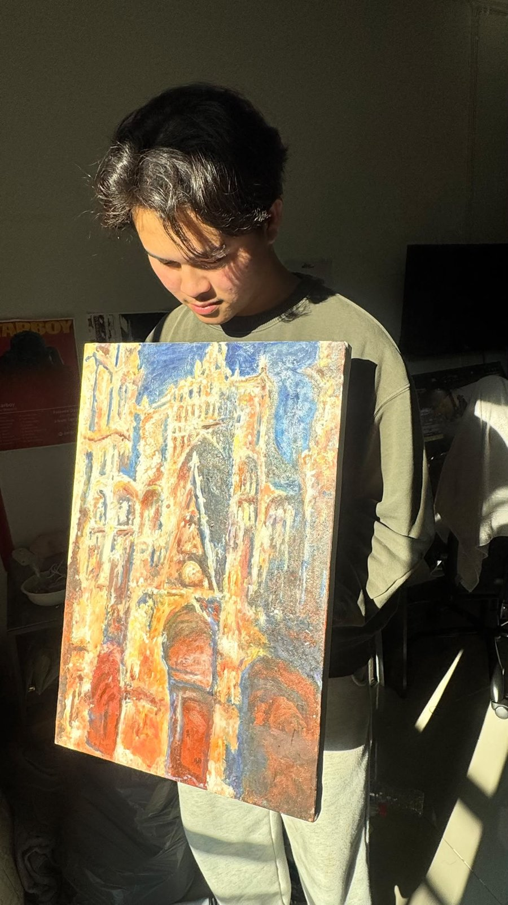
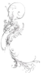
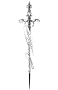

PROCESS
กระบวนการทำงาน
ETERNAL ART STYLE

ARTIST : ปุณณนัท เอี่ยมเมี่ยน
ผมเป็นผู้สร้างสรรค์ผลงานศิลปะที่สนใจการถ่ายทอดความรู้สึกและเรื่องราวผ่าน สี แสง เงา รูปทรง และภาพบุคคล โดยให้ความสำคัญกับทั้งความถูกต้องของรูปทรงและอารมณ์ที่เกิดขึ้นภายในภาพ
MY ART
ผลงานของผมมีความหลากหลายทั้งในด้านเทคนิคและแนวคิด ตั้งแต่การวาดภาพเหมือน การทำ Reproduction ไปจนถึงการสร้างสรรค์ผลงานจากเรื่องราวและจินตนาการของตนเอง โดยใช้ทั้ง สีน้ำมันและสีอะคริลิคบนผ้าใบ ผมสนใจการใช้สีและแสงเงาเพื่อสร้างบรรยากาศ รวมถึงการทดลองจัดองค์ประกอบที่ช่วยให้ผู้ชมสามารถรับรู้ถึงอารมณ์และเรื่องราวที่ซ่อนอยู่ภายในผลงาน
แรงบันดาลใจในการสร้างผลงานชิ้นนี้มาจากศิลปะ Tattoo ที่มีเอกลักษณ์จากเส้นสายและลวดลายที่ชัดเจน ฉันนำความโดดเด่นของเส้นและองค์ประกอบเหล่านั้นมาประยุกต์เข้ากับงานศิลปะของตัวเอง เพื่อถ่ายทอดความรู้สึกและตัวตนผ่านภาพ ผลงานจึงเป็นการผสมผสานระหว่างความดิบของ Tattoo กับแนวคิดและสไตล์เฉพาะตัวของฉัน


กระบวนการทำงาน